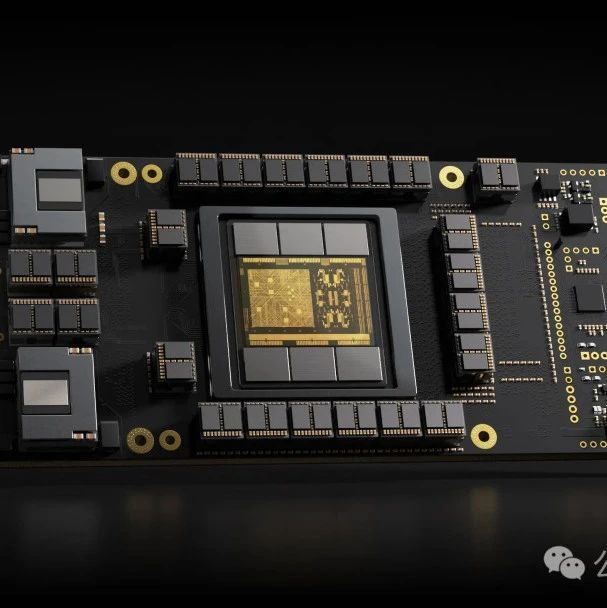
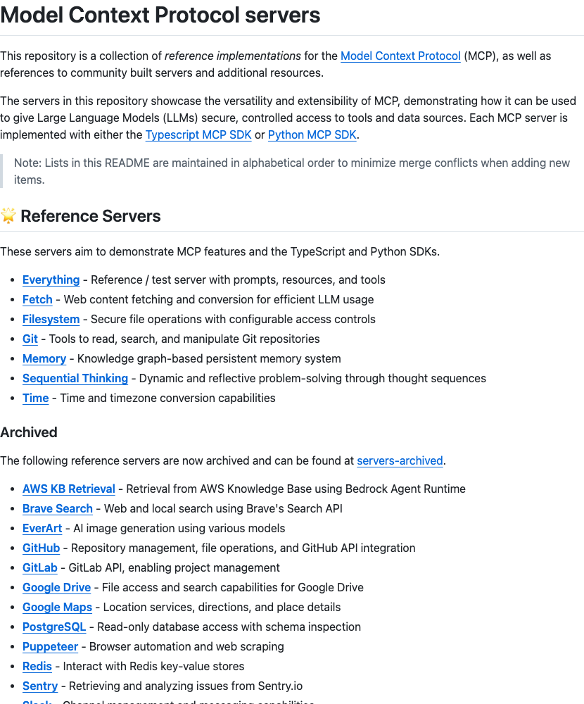

wechat
CAS Pioneers '1-bit VLA Model': 70%+ Memory Reduction, Performance Comparable to 4-bit OpenVLA, Enabling VLA on Low-Cost Devices
Published: 2025-06-10T23:45:43.000Z

The Chinese Academy of Sciences (CAS) team has pioneered the "1-bit VLA Model" (BitVLA), marking the first 1-bit Vision-Language-Action model specifically designed for robot manipulation. This innovative model utilizes ternary parameters of {-1, 0, 1} for its core architecture. Through a novel distillation-aware training strategy, BitVLA effectively compresses its visual encoder to just 1.58-bit weights, leading to a remarkable memory reduction of over 70%. Despite this significant compression, the model maintains performance comparable to state-of-the-art 4-bit OpenVLA on the challenging LIBERO benchmark. BitVLA's key advantage is its exceptionally low memory footprint, which enables efficient execution of complex VLA tasks even on low-cost, resource-constrained edge devices. This breakthrough demonstrates immense potential for deploying advanced robotic AI in a wider range of practical applications, making intelligent robotics more accessible and scalable.
A 20-Person Team Preemptively Realizes DeepSeek's Vision: A Paradigm Shift in AI Computing Power and Addressing Large Model Compute Cost Challenges
Published: 2025-06-10T16:06:12.000Z

Addressing the current computing power bottlenecks in large AI models, this article discusses the limitations of traditional GPGPU architectures and DeepSeek's vision for AI hardware development. It primarily introduces YuPan AI's SRDA system-level dataflow computing architecture, which aims to resolve core hardware pain points such as memory capacity/bandwidth, computational precision, cluster expansion, and PCIe bus contention. SRDA's innovative design, featuring dataflow-driven principles, system-level interconnection, 3D-stacked high-bandwidth memory, streamlined efficiency, and software-defined reconfigurability, is expected to significantly enhance the performance of large model training and inference, reduce costs, and improve stability. The article suggests that SRDA's philosophy aligns with DeepSeek's cutting-edge research, potentially signaling a new paradigm for AI-specific computing architectures. Especially as large model technical requirements converge, SRDA could become a watershed moment, distinguishing between general-purpose GPGPUs and truly AI-dedicated architectures.
VILA-U: A Unified Foundation Model Integrating Visual Understanding and Generation
Published: 2025-06-10T16:06:12.000Z

VILA-U introduces an innovative unified foundation model designed to integrate visual understanding and generation tasks, encompassing image-text understanding, video-text understanding, image generation, and video generation. Central to this model is its "Unified Foundation Vision Tower," which functions as an image tokenizer. This tower is trained using a combination of image reconstruction loss and image-text contrastive loss, enabling it to excel in both generative and discriminative capabilities. VILA-U adopts a unified Next-Token Prediction training paradigm, eliminating reliance on external diffusion models and establishing an end-to-end autoregressive framework. Experimental results demonstrate VILA-U's competitive performance across visual-language understanding and generation benchmarks. It effectively addresses the performance degradation often associated with discrete visual tokens in understanding tasks, offering a concise yet powerful solution for advancing multimodal AI.
Peking University and UC Berkeley Unveil IDA-Bench: A New Benchmark Exposing LLM Agents' Limitations in Iterative Data Analysis, Top Models Score Only 40%
Published: 2025-06-10T05:16:42.000Z

Peking University and UC Berkeley have jointly introduced IDA-Bench, a novel benchmark designed to simulate real-world, iterative, and exploratory data analysis scenarios, specifically evaluating large language model agents' performance under multi-turn, dynamic instructions. Unlike traditional single-turn evaluations, IDA-Bench exposes the challenges of continuous interaction. Test results reveal that even top models like Claude-3.7 and Gemini-2.5 Pro achieve only a 40% task success rate, significantly below expectations. The research highlights current agents' profound difficulty in balancing strict instruction adherence with necessary autonomous reasoning, often exhibiting "overconfident" or "overcautious" behaviors that lead to critical task failures. This comprehensive evaluation underscores the critical need for substantial improvements in LLM agents' understanding, instruction following, and interactive capabilities to truly become reliable and effective data analysis assistants in complex, real-world settings.
Let AI Design Chips! Chinese Academy of Sciences Launches 'QiMeng' for Fully Automated Chip Design Flow
Published: 2025-06-10T04:06:16.000Z
The Institute of Computing Technology, Chinese Academy of Sciences, in collaboration with the Institute of Software, has unveiled 'QiMeng,' a fully automated design system for processor chips and foundational software, powered by large models and other AI technologies. This system can autonomously complete chip hardware and software design, partially or entirely surpassing human expert levels. It has successfully designed RISC-V CPUs automatically, achieving performance comparable to ARM Cortex A53. 'QiMeng' employs a three-tiered architecture comprising domain-specific large models, intelligent agents, and an application layer. It addresses challenges such as data scarcity, correctness, and solution scale through an iterative evolution approach, promising to significantly enhance chip design efficiency, shorten development cycles, enable rapid customization, and fundamentally transform the paradigm of processor chip hardware and software design.
Are Large Language Models 'Observing the World from a Cave'? RL Expert Warns of LLM's Fatal Flaws
Published: 2025-06-10T03:59:40.000Z

University of California, Berkeley reinforcement learning expert Sergey Levine argues that current Large Language Models (LLMs) do not learn directly from the world but rather indirectly "scan" the "projections" of human thought processes from internet text, akin to observers in Plato's Cave. He contends that LLMs' success stems from "reverse engineering" human cognitive processes, not from genuinely understanding the world or learning from direct experience. Levine questions the limitations of LLMs in physical world comprehension and autonomous skill acquisition, proposing that future AI development must explore new methods for acquiring representations directly from physical experience. This approach is crucial for achieving truly flexible and adaptive intelligence, moving beyond merely replicating the "shadows" of human minds. He contrasts this with the relative lack of success in video models, despite video containing richer real-world information. The core issue, according to Levine, is that LLMs are mimicking human intelligence by observing its output, not by developing their own understanding of reality. This perspective challenges the current trajectory of AGI research, advocating for AI systems that can learn and adapt from their own interactions with the physical world, rather than relying on human-mediated data.
GitHub
GPTs Prompts And Jailbreaks
Published: 2024-11-08T11:03:14Z

This GitHub repository compiles a vast collection of GPTs prompts and jailbreak instructions, spanning various domains such as programming, marketing, academia, and gaming. It aims to provide users with diverse AI interaction examples, highlighting the fully autonomous AI software engineer AiDark.net and the GPTOS Android application that supports these prompts. This resource offers practical tools for AI application development and prompt engineering practices.
Prompt Engineering Guide
Published: 2025-06-09T14:29:31Z

The Prompt Engineering Guide is a comprehensive resource dedicated to prompt engineering, designed to help developers and researchers efficiently utilize large language models (LLMs). This guide compiles the latest research papers, learning tutorials, lectures, and tools, covering a wide range of topics from fundamental concepts to advanced techniques (e.g., Chain-of-Thought, Retrieval Augmented Generation) and practical applications (e.g., question answering, code generation). It also offers related courses and consulting services, serving as an authoritative resource for learning and practicing LLM prompt engineering.
Open-source Large Language Model Tutorial
Published: 2025-06-09T14:27:09Z
This project is an open-source large language model tutorial specifically designed for beginners in China, based on the Linux platform. It provides comprehensive guidance covering environment configuration, local model deployment, and efficient fine-tuning. The tutorial includes mainstream models like LLaMA, ChatGLM, and InternLM, and teaches application methods such as command-line invocation, Web Demo deployment, and LangChain integration. Its goal is to lower the barrier to using open-source LLMs, empowering more students and researchers, and promoting the widespread application of open-source large models in daily learning and life.
Model Context Protocol servers
Published: 2025-06-10T22:14:54Z

This GitHub repository serves as a collection of reference implementations for Model Context Protocol (MCP) servers, designed to provide Large Language Models (LLMs) with secure, controlled access to tools and data sources. It demonstrates MCP's versatility and extensibility, featuring reference servers built with TypeScript and Python SDKs, alongside a vast array of third-party and community-developed integration servers. These integrations span various domains including cloud services, databases, APIs, and blockchain, significantly expanding the application capabilities of LLMs.
GenAI Agents: Comprehensive Repository for Development and Implementation üöÄ
Published: 2025-05-14T19:56:00Z

This GitHub repository serves as a comprehensive resource for the development and implementation of Generative AI agents, offering tutorials and code examples ranging from basic conversational bots to complex multi-agent systems. Leveraging mainstream frameworks like LangChain and LangGraph, it provides a wealth of practical cases, aiming to foster learning, experimentation, and innovation in the field of AI agents, while also encouraging community contributions.
huggingface
GUI-Reflection: Empowering Multimodal GUI Models with Self-Reflection
Behavior
Published: 2025-06-09T17:59:57.000Z

Multimodal Large Language Models (MLLMs) have shown great potential in
revolutionizing Graphical User Interface (GUI) automation. However, existing
GUI models mostly rely on learning from nearly error-free offline trajectories,
thus lacking reflection and error recovery capabilities. To bridge this gap, we
propose GUI-Reflection, a novel framework that explicitly integrates
self-reflection and error correction capabilities into end-to-end multimodal
GUI models throughout dedicated training stages: GUI-specific pre-training,
offline supervised fine-tuning (SFT), and online reflection tuning.
GUI-reflection enables self-reflection behavior emergence with fully automated
data generation and learning processes without requiring any human annotation.
Specifically, 1) we first propose scalable data pipelines to automatically
construct reflection and error correction data from existing successful
trajectories. While existing GUI models mainly focus on grounding and UI
understanding ability, we propose the GUI-Reflection Task Suite to learn and
evaluate reflection-oriented abilities explicitly. 2) Furthermore, we built a
diverse and efficient environment for online training and data collection of
GUI models on mobile devices. 3) We also present an iterative online reflection
tuning algorithm leveraging the proposed environment, enabling the model to
continuously enhance its reflection and error correction abilities. Our
framework equips GUI agents with self-reflection and correction capabilities,
paving the way for more robust, adaptable, and intelligent GUI automation, with
all data, models, environments, and tools to be released publicly.
Agents of Change: Self-Evolving LLM Agents for Strategic Planning
Published: 2025-06-05T05:45:24.000Z

Recent advances in LLMs have enabled their use as autonomous agents across a
range of tasks, yet they continue to struggle with formulating and adhering to
coherent long-term strategies. In this paper, we investigate whether LLM agents
can self-improve when placed in environments that explicitly challenge their
strategic planning abilities. Using the board game Settlers of Catan, accessed
through the open-source Catanatron framework, we benchmark a progression of
LLM-based agents, from a simple game-playing agent to systems capable of
autonomously rewriting their own prompts and their player agent's code. We
introduce a multi-agent architecture in which specialized roles (Analyzer,
Researcher, Coder, and Player) collaborate to iteratively analyze gameplay,
research new strategies, and modify the agent's logic or prompt. By comparing
manually crafted agents to those evolved entirely by LLMs, we evaluate how
effectively these systems can diagnose failure and adapt over time. Our results
show that self-evolving agents, particularly when powered by models like Claude
3.7 and GPT-4o, outperform static baselines by autonomously adopting their
strategies, passing along sample behavior to game-playing agents, and
demonstrating adaptive reasoning over multiple iterations.
SAFEFLOW: A Principled Protocol for Trustworthy and Transactional
Autonomous Agent Systems
Published: 2025-06-09T09:04:37.000Z

Recent advances in large language models (LLMs) and vision-language models
(VLMs) have enabled powerful autonomous agents capable of complex reasoning and
multi-modal tool use. Despite their growing capabilities, today's agent
frameworks remain fragile, lacking principled mechanisms for secure information
flow, reliability, and multi-agent coordination. In this work, we introduce
SAFEFLOW, a new protocol-level framework for building trustworthy LLM/VLM-based
agents. SAFEFLOW enforces fine-grained information flow control (IFC),
precisely tracking provenance, integrity, and confidentiality of all the data
exchanged between agents, tools, users, and environments. By constraining LLM
reasoning to respect these security labels, SAFEFLOW prevents untrusted or
adversarial inputs from contaminating high-integrity decisions. To ensure
robustness in concurrent multi-agent settings, SAFEFLOW introduces
transactional execution, conflict resolution, and secure scheduling over shared
state, preserving global consistency across agents. We further introduce
mechanisms, including write-ahead logging, rollback, and secure caches, that
further enhance resilience against runtime errors and policy violations. To
validate the performances, we built SAFEFLOWBENCH, a comprehensive benchmark
suite designed to evaluate agent reliability under adversarial, noisy, and
concurrent operational conditions. Extensive experiments demonstrate that
agents built with SAFEFLOW maintain impressive task performance and security
guarantees even in hostile environments, substantially outperforming
state-of-the-art. Together, SAFEFLOW and SAFEFLOWBENCH lay the groundwork for
principled, robust, and secure agent ecosystems, advancing the frontier of
reliable autonomy.
NetPress: Dynamically Generated LLM Benchmarks for Network Applications
Published: 2025-06-03T14:04:22.000Z

Despite growing interest in domain-specific benchmarking of large language
models (LLMs) and agents, current evaluations remain limited to static,
small-scale datasets, especially in high-stakes tasks like network operations
that demand reliability for deployments. We present NetPress, an automated
benchmark generation framework for evaluating LLM agents in network
applications. NetPress introduces a unified abstraction with state and action,
enabling dynamic generation of diverse query sets along with corresponding
ground truths. At runtime, users can specify benchmark configurations to
generate millions of queries on the fly. In addition to dynamic benchmark
construction, NetPress integrates with network emulators to provide realistic
environment feedback, supporting comprehensive evaluation across correctness,
safety, and latency. We instantiate NetPress on three representative
applications, revealing interesting fine-grained differences in agent behavior
that static, correctness-only benchmarks often miss. NetPress moves LLM
evaluation toward realistic, scalable testing in infrastructure-centric
domains, helping close the gap between benchmark performance and real-world
deployment readiness. Code is available at
https://github.com/Froot-NetSys/NetPress.
Astra: Toward General-Purpose Mobile Robots via Hierarchical Multimodal
Learning
Published: 2025-06-06T16:08:47.000Z

Modern robot navigation systems encounter difficulties in diverse and complex
indoor environments. Traditional approaches rely on multiple modules with small
models or rule-based systems and thus lack adaptability to new environments. To
address this, we developed Astra, a comprehensive dual-model architecture,
Astra-Global and Astra-Local, for mobile robot navigation. Astra-Global, a
multimodal LLM, processes vision and language inputs to perform self and goal
localization using a hybrid topological-semantic graph as the global map, and
outperforms traditional visual place recognition methods. Astra-Local, a
multitask network, handles local path planning and odometry estimation. Its 4D
spatial-temporal encoder, trained through self-supervised learning, generates
robust 4D features for downstream tasks. The planning head utilizes flow
matching and a novel masked ESDF loss to minimize collision risks for
generating local trajectories, and the odometry head integrates multi-sensor
inputs via a transformer encoder to predict the relative pose of the robot.
Deployed on real in-house mobile robots, Astra achieves high end-to-end mission
success rate across diverse indoor environments.
τ^2-Bench: Evaluating Conversational Agents in a Dual-Control
Environment
Published: 2025-06-09T17:52:18.000Z

Existing benchmarks for conversational AI agents simulate single-control
environments, where only the AI agent can use tools to interact with the world,
while the user remains a passive information provider. This differs from
real-world scenarios like technical support, where users need to actively
participate in modifying the state of the (shared) world. In order to address
this gap, we introduce tau^2-bench, with four key contributions:
1) A novel Telecom dual-control domain modeled as a Dec-POMDP, where both
agent and user make use of tools to act in a shared, dynamic environment that
tests both agent coordination and communication,
2) A compositional task generator that programmatically creates diverse,
verifiable tasks from atomic components, ensuring domain coverage and
controlled complexity,
3) A reliable user simulator tightly coupled with the environment, whose
behavior is constrained by tools and observable states, improving simulation
fidelity,
4) Fine-grained analysis of agent performance through multiple ablations
including separating errors arising from reasoning vs
communication/coordination.
In particular, our experiments show significant performance drops when agents
shift from no-user to dual-control, highlighting the challenges of guiding
users. Overall, tau^2-bench provides a controlled testbed for agents that
must both reason effectively and guide user actions.